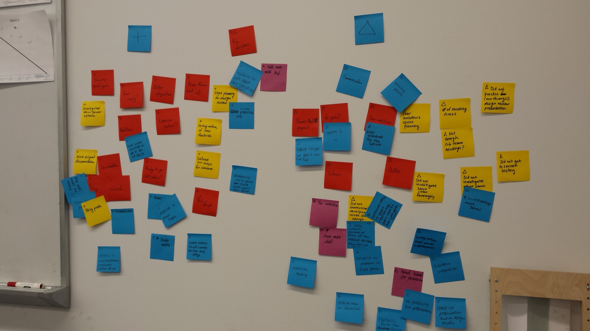

Blog
Read more about our personal journeys here.
Goodbye Sprint 2, Hello Sprint 3!
Meg McCauley
13 November 2015 3:03 PM
We just finished the first week of Sprint 3. This is a very exciting time for our team where there are lots of things for us to do. We had our first real sprint review to end Sprint 2 last Friday. Seeing the progress of other teams and receiving feedback from our professors and our peers left us with a lot to think about as we started Sprint 3.
The first thing we did during Sprint 3 was sit down as a full team and talk in detail about the direction that we want our project to head in. The first major change that we made involved switching our main display from a ribbon that twists to a paddle that rotates. This choice was made for a variety of reasons, but primarily to reduce the number of servos that we would have to power and to simplify the computing system.
After making our plans to look forward, we spent some time look back and reflecting on Sprint 2 by doing a sprint retrospective. During a retrospective, each team member individually writes down pluses and deltas from the sprint on sticky notes. Pluses are positive things that we want to continue doing; deltas are things that could use improvement next sprint. After we have all written our thoughts down, we take turns putting our sticky notes on the wall and giving a short explanation for each plus and delta. As more team members add their sticky notes to the wall, we try to group them by similar idea or theme.
At the end of this process, we look over the wall as a whole and chose a kaizen, or focus, for the upcoming sprint. This sprint, we are going to be focusing on communicating problems. This means that whenever one subteam runs into a problem, they will make sure to inform the full team so that we can all brainstorm solutions together. This kaizen also includes communicating with our professors and peers to get a different perspective and possible outside suggestions to resolve our problem.
After talking about our pluses and deltas, we made a list of goals that we as a team wanted to accomplish this sprint:
- Sensor integration
- New prototype at full scale
- Fully contained system
- Reliable servos
- Arduino powered on power supply
- Decide how to power all servos
- Seeduino Mega?
- Arduino shield?
- At least 1-2 more beautiful web pages
- Individual work and subteam meetings
To fulfill one of our sprint goals, we decided to meet as subteams to get more work done when our full team wasn’t available. At the first ECE subteam meeting, Jason, Charlie, and I worked together to get an integrated prototype of an IR sensor responding to user input and controlling a servo. This interaction between sensor and servo is key to our final design, so it was extremely exciting to be able to have this interaction prototyped and working. We recorded this important milestone in film.
Although we have encountered some roadblocks on our journey so far, we are working hard to overcome them. I am optimistic about where we are headed and can’t wait to see where we end up at the end of this sprint!
Best, Meg